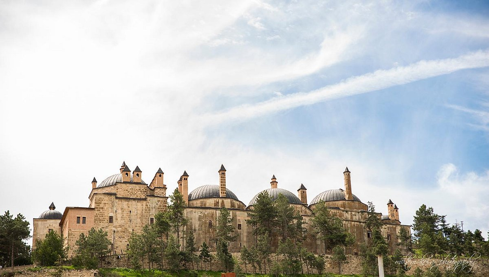

Eskişehir Kültürel Yerler
Modern ve Tarihi Dokunun Buluştuğu Şehrin Kültürel Mirası
Müzeler
Odunpazarı Modern Müze
Modern sanat eserlerinin sergilendiği, mimari tasarımıyla dikkat çeken müze.

Balmumu Müzesi
Türk ve dünya tarihinden önemli kişilerin balmumu heykellerinin sergilendiği müze.
Tarihi Yapılar
Kurşunlu Camii
Osmanlı döneminden kalma, mimari özellikleriyle dikkat çeken tarihi cami.
Odunpazarı Evleri
Geleneksel Osmanlı mimarisini yansıtan, tarihi evlerin bulunduğu bölge.

Seyitgazi Külliyesi
Selçuklu döneminden kalma, tarihi ve dini öneme sahip külliyelerden biri.
Tarihi Camiler
Ulu Cami
Şehrin en eski camilerinden biri olan, tarihi dokusuyla dikkat çeken cami.

Ak Cami
Osmanlı döneminden kalma, beyaz taşlarıyla dikkat çeken tarihi cami.